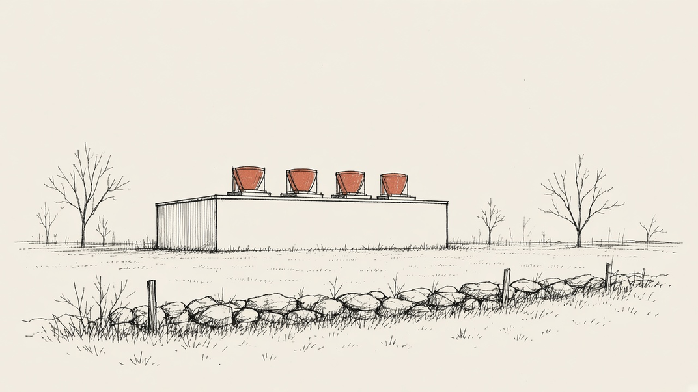

Stories we're following
Gorham's data-center pause
Last updated
What's happening
Gorham has paused new data centers since June 2. On Nov. 10, councilors voted unanimously to extend the pause another 180 days, NEWS CENTER Maine and WGME reported. The town's written order sets the new end date as May 28, 2027. Separately, the town is weighing a permanent rule on large data centers. The Planning Board is still reviewing it. No data-center applications are pending, according to news reports and town staff.
What this means for residents
- While the pause is in effect, the town will not review or approve new or expanded data centers.
- The pause is temporary. The town says the Planning Board will review a permanent rule first. Then the council plans at least one public hearing before it votes.
- No date has been posted yet for the next vote or hearing on data centers.

The timeline
How the plan has moved
-
Nov. 18, 2025
Council asks for a data-center rule
A 7-0 vote sent a proposal to restrict large data centers to the council's Ordinance Committee for review.
-
June 2, 2026
Council passes a 180-day pause
A 7-0 vote adopted a temporary moratorium on data centers after a public hearing. It applies from June 2.
-
June to Aug. 2026
Committee backs a permanent rule
The council's Ordinance Committee reviewed the proposal on June 8, July 13 and Aug. 10. It recommended adoption.
-
Sept. 1, 2026
Council sends the rule to the Planning Board
A 7-0 vote asked the Planning Board to hold a public hearing on the proposed code change.
-
Oct. 5, 2026
Planning Board holds a hearing
No one from the public spoke, the minutes say. The board voted 4-0 to send the item to its Ordinance Committee for more discussion.
-
Nov. 2, 2026
Planning Board committee workshop
The board's Ordinance Committee discussed the proposal. No written outcome had been posted as of Nov. 12.
-
Nov. 10, 2026
Council extends the pause
Councilors voted unanimously to extend it 180 days, news outlets reported. The order on the agenda sets the end date as May 28, 2027. Official minutes are not posted yet.
-
Nov. 29, 2026
First pause was set to end
The town's order says the original pause would have expired this day. The extension replaces that date.
-
Next Dec. 1, 2026
Next council meeting
6:30 p.m. in Council Chambers. The agenda was not posted as of Nov. 12. It is not known if data centers will be on it.
-
Dec. 7, 2026
Planning Board meetings
The board's Ordinance Committee meets at 6 p.m. and the full board at 7 p.m. Agendas were not posted as of Nov. 12.
-
May 28, 2027
Extended pause ends
Unless the council extends or repeals it first, the pause ends this day.
-
Not yet set
Council hearing on a permanent rule
The town says the council will hold at least one public hearing before voting on a permanent rule. No date has been set.
Check
Where sources differ
- When the pause began. WGME's Nov. 11 story calls it "the 2024 data center moratorium." Town minutes and the Nov. 10 order say it was adopted June 2, 2026. We use the town records.
- What returns to the council. NEWS CENTER Maine reported that after Planning Board review, "the extension will be returned to the council" to be finalized. The order on the Nov. 10 agenda extends the pause outright, to May 28, 2027. It describes Planning Board review of the separate permanent rule, not of the extension. Without minutes, we cannot confirm the final wording adopted.
- The Planning Board hearing. The Nov. 10 order says a Planning Board hearing "will be conducted in the near future." Planning Board records show it held one on Oct. 5. The order does not say if another is planned.
- Who changes the code. WGME reported Sept. 4 that the Planning Board will need to vote to change the code. The town's order says the council votes on the change after the Planning Board's review and recommendation.
- Comments on June 2. The Press Herald reported that three residents spoke in favor of the moratorium. The council minutes list no comments at the moratorium hearing itself. They do list residents speaking earlier, in the open comment period.
Next
No data-center vote or hearing is scheduled yet
The next Town Council meeting is Tue., Dec. 1, at 6:30 p.m. in Council Chambers at the Gorham Municipal Center, 75 South Street. The Planning Board meets Mon., Dec. 7. Neither agenda was posted as of Nov. 12.
The pause
Key points
First pause
180
days, from June 2 to Nov. 29, 2026
Extension
180
more days, ending May 28, 2027
The permanent rule has not been adopted.
- The pause covers data centers with 2,500 square feet or more of data-center space
- It stops town permits, approvals and review of applications for new or expanded data centers
- The proposed permanent rule would define a data center as 50,000 square feet or more
- It would also bar any use not listed as allowed in a zone. Town staff said no zone now allows data centers
- Staff said an unlisted use could still come through a contract zone or a code change
- No data-center applications are pending
The stakes
Who decides
Town Council
Adopted the June 2 pause and voted Nov. 10 to extend it. It votes on any permanent rule. The town says it plans at least one public hearing first.
Planning Board
Reviews the proposed code change and makes a recommendation to the council. It held a hearing Oct. 5 and sent the item to its Ordinance Committee.
What's being decided
Whether Gorham adopts a permanent rule on large data centers, and what it says. On Oct. 5, board members asked how the 50,000 square foot limit applies to sites with other uses. They also asked whether barring every unlisted use could block businesses no one has foreseen. Members discussed possible effects on power costs and water use, and whether a facility could supply its own power and reuse cooling water.
Gaps
Not yet available
- Official minutes of the Nov. 10 council meeting. The vote count comes from news reports.
- A written outcome of the Nov. 2 Planning Board committee workshop
- Agendas for the Dec. 1 council and Dec. 7 Planning Board meetings
- A date for a Planning Board recommendation
- A date for a council hearing on a permanent rule
- Final wording of a permanent rule
Records
Details and sources
- Minutes of the Nov. 18, 2025 Town Council meeting show Order 25-113, sending a proposal to restrict large data centers to the Ordinance Committee, passed with 7 yeas.
- Minutes of the June 2, 2026 Town Council meeting show Order 26-55, the temporary data-center moratorium, passed with 7 yeas. The ordinance defines a data center as a facility mainly for high-intensity computing, such as data storage, cloud computing, artificial intelligence or cryptocurrency mining, with 2,500 square feet or more of data-center area. It applies from June 2, 2026, for 180 days.
- Minutes of the Sept. 1, 2026 Town Council meeting show Order 26-88, forwarding the code change to the Planning Board for a public hearing, passed with 7 yeas. The proposal defines a data center at 50,000 square feet or more.
- Planning Board results for Oct. 5, 2026 show the board voted 4-0, with two members absent and one seat vacant, to send the item to its Ordinance Committee. Draft minutes of that meeting, approved as written on Nov. 2, say no one from the public spoke. In them, a staff member said she was not aware of any data centers proposed in Gorham.
- The Nov. 2, 2026 Planning Board Ordinance Committee packet says the council's Ordinance Committee reviewed the proposal on June 8, July 13 and Aug. 10, 2026, and recommended adoption.
- Order 26-107, on the Nov. 10, 2026 council agenda, says the June 2 pause was set to expire Nov. 29, 2026. It extends the pause 180 days, ending May 28, 2027, or until it is extended again or repealed. It says the council intends to hold at least one public hearing before voting on the permanent rule.
- NEWS CENTER Maine (Nov. 10) and WGME (Nov. 11) reported the unanimous Nov. 10 vote and that no data-center applications are pending in Gorham.
- The town calendar, read Nov. 12, lists a Town Council meeting Dec. 1 at 6:30 p.m., and Planning Board meetings Dec. 7 at 6 p.m. (Ordinance Committee) and 7 p.m. No agendas were posted for them.
- Town Council agenda, Nov. 10, 2026 (Order 26-107)
- Town Council minutes, June 2, 2026 (Order 26-55)
- Town Council minutes, Sept. 1, 2026 (Order 26-88)
- Town Council minutes, Nov. 18, 2025 (Order 25-113)
- Planning Board results, Oct. 5, 2026
- Planning Board draft minutes, Oct. 5, 2026
- Planning Board results, Nov. 2, 2026
- Planning Board Ordinance Committee packet, Nov. 2, 2026
- Town of Gorham calendar
- NEWS CENTER Maine, Nov. 10, 2026
- WGME, Nov. 11, 2026
- WGME, Sept. 4, 2026
- Portland Press Herald, June 4, 2026